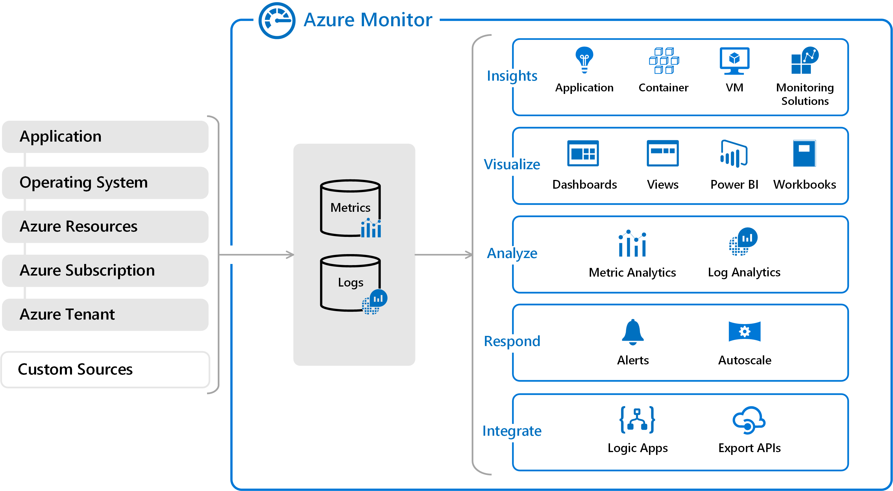
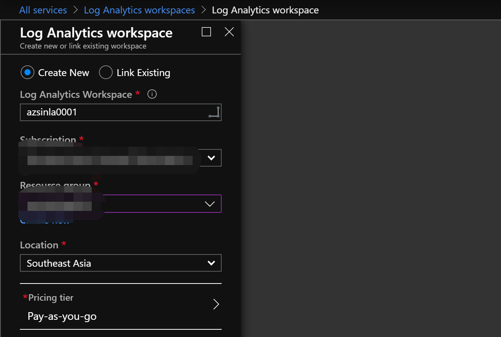
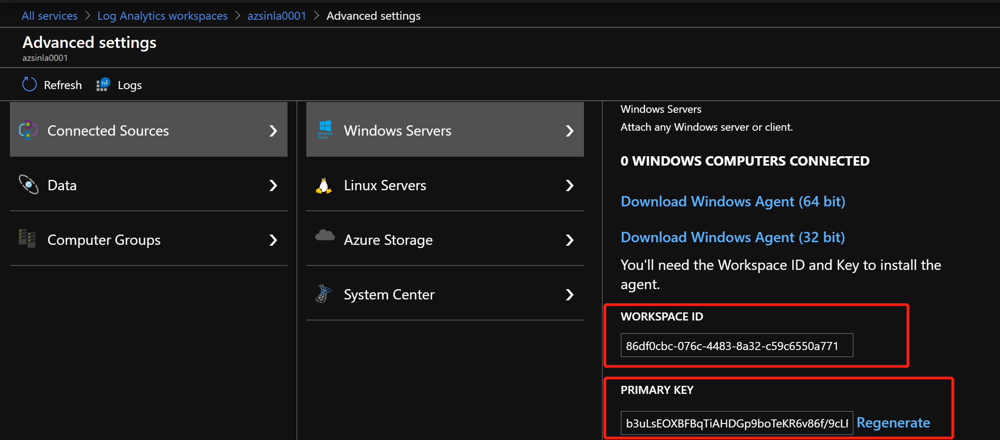
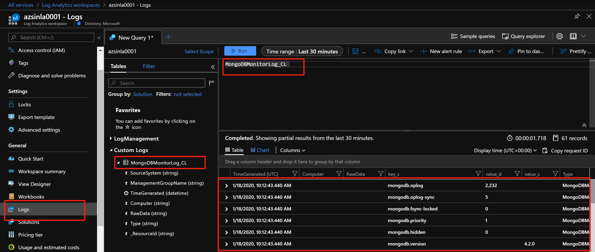

<!DOCTYPE html>
<html>
<head><meta name="generator" content="Hexo 3.8.0">
  <meta charset="utf-8">
  
  <title>集成 Microsoft Azure Monitor Restful API 来监控 MongoDB | 茶包哥的迷你仓</title>
  <meta name="viewport" content="width=device-width, initial-scale=1, maximum-scale=1">
  <meta name="description" content="1. 前言随时 IT 技术的蓬勃发展，出现了越来越多地以各种技术栈为核心的应用程序，同时应用架构和服务的调用关系也就变得越来越复杂，所以建立一个强大的监控系统的必要性就很自然的体现了出来。一般在实际的生产环境中，监控对象类型丰富多样，工具平台也有很多可以来选择。比如从最早的 Smokeping，Cacti，Nagios，Ganglia 发展到现在比较流行功能也更加强大的 Zabbix，Promet">
<meta name="keywords" content="Microsoft Azure,Linux,Monitor,MongoDB">
<meta property="og:type" content="article">
<meta property="og:title" content="集成 Microsoft Azure Monitor Restful API 来监控 MongoDB">
<meta property="og:url" content="https://theodorew.github.io/wxsblog.github.io/2020/01/18/2020-01-18-AzureMonitorRestfulAPI/index.html">
<meta property="og:site_name" content="茶包哥的迷你仓">
<meta property="og:description" content="1. 前言随时 IT 技术的蓬勃发展，出现了越来越多地以各种技术栈为核心的应用程序，同时应用架构和服务的调用关系也就变得越来越复杂，所以建立一个强大的监控系统的必要性就很自然的体现了出来。一般在实际的生产环境中，监控对象类型丰富多样，工具平台也有很多可以来选择。比如从最早的 Smokeping，Cacti，Nagios，Ganglia 发展到现在比较流行功能也更加强大的 Zabbix，Promet">
<meta property="og:locale" content="default">
<meta property="og:image" content="https://theodorew.github.io/wxsblog.github.io/2020/01/18/2020-01-18-AzureMonitorRestfulAPI/Azure-Monitor-Arch.jpg">
<meta property="og:image" content="https://theodorew.github.io/wxsblog.github.io/2020/01/18/2020-01-18-AzureMonitorRestfulAPI/LA-Creation.jpg">
<meta property="og:image" content="https://theodorew.github.io/wxsblog.github.io/2020/01/18/2020-01-18-AzureMonitorRestfulAPI/LA-Info.jpg">
<meta property="og:image" content="https://theodorew.github.io/wxsblog.github.io/2020/01/18/2020-01-18-AzureMonitorRestfulAPI/Azure-Monitor-Restful-API-MongoDB.jpg">
<meta property="og:updated_time" content="2020-07-02T14:54:25.244Z">
<meta name="twitter:card" content="summary">
<meta name="twitter:title" content="集成 Microsoft Azure Monitor Restful API 来监控 MongoDB">
<meta name="twitter:description" content="1. 前言随时 IT 技术的蓬勃发展，出现了越来越多地以各种技术栈为核心的应用程序，同时应用架构和服务的调用关系也就变得越来越复杂，所以建立一个强大的监控系统的必要性就很自然的体现了出来。一般在实际的生产环境中，监控对象类型丰富多样，工具平台也有很多可以来选择。比如从最早的 Smokeping，Cacti，Nagios，Ganglia 发展到现在比较流行功能也更加强大的 Zabbix，Promet">
<meta name="twitter:image" content="https://theodorew.github.io/wxsblog.github.io/2020/01/18/2020-01-18-AzureMonitorRestfulAPI/Azure-Monitor-Arch.jpg">
  
    <link rel="alternative" href="/atom.xml" title="茶包哥的迷你仓" type="application/atom+xml">
  
  
    <link rel="icon" href="/favicon.png">
  
  <link rel="stylesheet" href="/wxsblog.github.io/css/style.css">
  <!--[if lt IE 9]><script src="//cdnjs.cloudflare.com/ajax/libs/html5shiv/3.7/html5shiv.min.js"></script><![endif]-->
  
</head></html>
<body>
<div id="container">
  <div id="wrap">
    <header id="header">
  <div id="banner"></div>
  <div id="header-outer" class="outer">
    <div id="header-title" class="inner">
      <h1 id="logo-wrap">
        <a href="/wxsblog.github.io/" id="logo">茶包哥的迷你仓</a>
      </h1>
      
        <h2 id="subtitle-wrap">
          <a href="/wxsblog.github.io/" id="subtitle">Focus on Cloud/Bigdata/Docker etc.</a>
        </h2>
      
    </div>
    <div id="header-inner" class="inner">
      <nav id="main-nav">
        <a id="main-nav-toggle" class="nav-icon"></a>
        
          <a class="main-nav-link" href="/wxsblog.github.io/">Home</a>
        
          <a class="main-nav-link" href="/wxsblog.github.io/archives">Archives</a>
        
      </nav>
      <nav id="sub-nav">
        
          <a id="nav-rss-link" class="nav-icon" href="/atom.xml" title="RSS Feed"></a>
        
        <a id="nav-search-btn" class="nav-icon" title="Search"></a>
      </nav>
      <div id="search-form-wrap">
        <form action="//www.baidu.com/baidu" method="get" accept-charset="utf-8" class="search-form">
          <input type="search" name="word" maxlength="20" class="search-form-input" placeholder="Search">
          <input type="submit" value="" class="search-form-submit">
          <input name="tn" type="hidden" value="bds">
          <input name="cl" type="hidden" value="3">
          <input name="ct" type="hidden" value="2097152">
          <input type="hidden" name="si" value="theodorew.github.io/wxsblog.github.io">
        </form>
      </div>
    </div>
  </div>
</header>
    <div class="outer">
      <section id="main"><article id="post-2020-01-18-AzureMonitorRestfulAPI" class="article article-type-post" itemscope="" itemprop="blogPost">
  <div class="article-meta">
    <a href="/wxsblog.github.io/2020/01/18/2020-01-18-AzureMonitorRestfulAPI/" class="article-date">
  <time datetime="2020-01-18T07:45:29.000Z" itemprop="datePublished">2020-01-18</time>
</a>
    
  <div class="article-category">
    <a class="article-category-link" href="/wxsblog.github.io/categories/Microsoft-Azure/">Microsoft Azure</a>►<a class="article-category-link" href="/wxsblog.github.io/categories/Microsoft-Azure/Monitor/">Monitor</a>►<a class="article-category-link" href="/wxsblog.github.io/categories/Microsoft-Azure/Monitor/MongoDB/">MongoDB</a>►<a class="article-category-link" href="/wxsblog.github.io/categories/Microsoft-Azure/Monitor/MongoDB/Linux/">Linux</a>
  </div>

  </div>
  <div class="article-inner">
    
    
      <header class="article-header">
        
  
    <h1 class="article-title" itemprop="name">
      集成 Microsoft Azure Monitor Restful API 来监控 MongoDB
    </h1>
  

      </header>
    
    <div class="article-entry" itemprop="articleBody">
      
        <h2 id="1-前言"><a href="#1-前言" class="headerlink" title="1. 前言"></a>1. 前言</h2><p>随时 IT 技术的蓬勃发展，出现了越来越多地以各种技术栈为核心的应用程序，同时应用架构和服务的调用关系也就变得越来越复杂，所以建立一个强大的监控系统的必要性就很自然的体现了出来。一般在实际的生产环境中，监控对象类型丰富多样，工具平台也有很多可以来选择。比如从最早的 Smokeping，Cacti，Nagios，Ganglia 发展到现在比较流行功能也更加强大的 Zabbix，Prometheus，Openfalcon 以及偏业务层做代码追踪的监控平台 CAT，Zipkin 等，这些都是很不错的工具和平台，只要运用合适，都可以解决很多场景和不同维度的监控需求。但是维护这些监控平台并不是一件容易的事情，从可靠性、性能到定制化开发，都需要花费很多的人力物力来做底层代码层面的修改，不然直接上生产有非常大的风险。依据此背景，Azure 也推出自己的监控服务 Azure Monitor，帮助客户不需要担心监控系统的可靠性，只需要关注业务的可靠性和监控需求的落地即可。Azure Monitor 支持从基础架构层、应用层甚至于容器层面的监控。本文主要介绍通过 Azure Monitor Restful API 来收集 MongoDB 的指标，从而来模拟通过 Azure Monitor 来做二开监控平台的场景。</p>
<h2 id="2-Azure-Monitor-介绍"><a href="#2-Azure-Monitor-介绍" class="headerlink" title="2. Azure Monitor 介绍"></a>2. Azure Monitor 介绍</h2><p>Azure Monitor 提供用于收集、分析和处理来自云与本地环境的遥测数据的综合解决方案，可将应用程序和服务的可用性和性能最大化。它可以帮助你了解应用程序的性能，并主动识别影响应用程序及其所依赖资源的问题。下图提供了 Azure Monitor 的概要视图。示意图的中心是用于存储指标和日志 ( Azure Monitor 使用的两种基本类型的数据 ) 的数据存储，左侧是用于填充这些数据存储的监视数据源，右侧是 Azure Monitor 针对这些收集的数据执行的不同功能，例如分析、警报和流式传输到外部系统。</p>
<p></p>
<p>Azure Monitor 支持监控的数据类型的层级都很多，具体可以参考<a href="https://docs.microsoft.com/zh-cn/azure/azure-monitor/overview" target="_blank" rel="noopener">官方文档</a>，就不在此赘述了。对于收集上来的数据，Azure Monitor 使用 Azure Data Explorer 使用的 Kusto 查询语言来做查询，同时包括高级功能，例如聚合、联接和智能分析等。话不多说，直接开干。</p>
<h2 id="3-Azure-Monitor-通过-Restful-API-监控-MongoDB"><a href="#3-Azure-Monitor-通过-Restful-API-监控-MongoDB" class="headerlink" title="3. Azure Monitor 通过 Restful API 监控 MongoDB"></a>3. Azure Monitor 通过 Restful API 监控 MongoDB</h2><h3 id="3-1-创建测试服务器-CentOS-Server"><a href="#3-1-创建测试服务器-CentOS-Server" class="headerlink" title="3.1 创建测试服务器 CentOS Server"></a>3.1 创建测试服务器 CentOS Server</h3><p>首先，通过 Terraform 自动化部署 CentOS 7.7 实例，具体的 .tf 文件内容如下，其中变量引用<br><figure class="highlight bash"><table><tr><td class="gutter"><pre><span class="line">1</span><br><span class="line">2</span><br><span class="line">3</span><br><span class="line">4</span><br><span class="line">5</span><br><span class="line">6</span><br><span class="line">7</span><br><span class="line">8</span><br><span class="line">9</span><br><span class="line">10</span><br><span class="line">11</span><br><span class="line">12</span><br><span class="line">13</span><br><span class="line">14</span><br><span class="line">15</span><br><span class="line">16</span><br><span class="line">17</span><br><span class="line">18</span><br><span class="line">19</span><br><span class="line">20</span><br><span class="line">21</span><br><span class="line">22</span><br><span class="line">23</span><br><span class="line">24</span><br><span class="line">25</span><br><span class="line">26</span><br><span class="line">27</span><br><span class="line">28</span><br><span class="line">29</span><br><span class="line">30</span><br><span class="line">31</span><br><span class="line">32</span><br><span class="line">33</span><br><span class="line">34</span><br><span class="line">35</span><br><span class="line">36</span><br><span class="line">37</span><br><span class="line">38</span><br><span class="line">39</span><br><span class="line">40</span><br><span class="line">41</span><br><span class="line">42</span><br><span class="line">43</span><br><span class="line">44</span><br><span class="line">45</span><br><span class="line">46</span><br><span class="line">47</span><br><span class="line">48</span><br><span class="line">49</span><br><span class="line">50</span><br><span class="line">51</span><br><span class="line">52</span><br><span class="line">53</span><br><span class="line">54</span><br><span class="line">55</span><br><span class="line">56</span><br><span class="line">57</span><br><span class="line">58</span><br><span class="line">59</span><br><span class="line">60</span><br><span class="line">61</span><br><span class="line">62</span><br><span class="line">63</span><br><span class="line">64</span><br><span class="line">65</span><br><span class="line">66</span><br><span class="line">67</span><br><span class="line">68</span><br><span class="line">69</span><br><span class="line">70</span><br><span class="line">71</span><br><span class="line">72</span><br><span class="line">73</span><br><span class="line">74</span><br><span class="line">75</span><br><span class="line">76</span><br><span class="line">77</span><br><span class="line">78</span><br><span class="line">79</span><br><span class="line">80</span><br><span class="line">81</span><br><span class="line">82</span><br><span class="line">83</span><br><span class="line">84</span><br><span class="line">85</span><br><span class="line">86</span><br><span class="line">87</span><br><span class="line">88</span><br><span class="line">89</span><br><span class="line">90</span><br><span class="line">91</span><br><span class="line">92</span><br><span class="line">93</span><br><span class="line">94</span><br><span class="line">95</span><br><span class="line">96</span><br><span class="line">97</span><br><span class="line">98</span><br><span class="line">99</span><br><span class="line">100</span><br><span class="line">101</span><br><span class="line">102</span><br><span class="line">103</span><br><span class="line">104</span><br><span class="line">105</span><br><span class="line">106</span><br><span class="line">107</span><br><span class="line">108</span><br><span class="line">109</span><br><span class="line">110</span><br><span class="line">111</span><br><span class="line">112</span><br><span class="line">113</span><br><span class="line">114</span><br><span class="line">115</span><br><span class="line">116</span><br><span class="line">117</span><br><span class="line">118</span><br><span class="line">119</span><br><span class="line">120</span><br><span class="line">121</span><br><span class="line">122</span><br><span class="line">123</span><br><span class="line">124</span><br><span class="line">125</span><br><span class="line">126</span><br><span class="line">127</span><br><span class="line">128</span><br><span class="line">129</span><br><span class="line">130</span><br><span class="line">131</span><br><span class="line">132</span><br><span class="line">133</span><br><span class="line">134</span><br><span class="line">135</span><br><span class="line">136</span><br><span class="line">137</span><br><span class="line">138</span><br><span class="line">139</span><br><span class="line">140</span><br><span class="line">141</span><br><span class="line">142</span><br><span class="line">143</span><br><span class="line">144</span><br><span class="line">145</span><br><span class="line">146</span><br><span class="line">147</span><br><span class="line">148</span><br><span class="line">149</span><br><span class="line">150</span><br><span class="line">151</span><br><span class="line">152</span><br><span class="line">153</span><br><span class="line">154</span><br><span class="line">155</span><br><span class="line">156</span><br><span class="line">157</span><br><span class="line">158</span><br><span class="line">159</span><br><span class="line">160</span><br><span class="line">161</span><br><span class="line">162</span><br><span class="line">163</span><br><span class="line">164</span><br><span class="line">165</span><br><span class="line">166</span><br><span class="line">167</span><br><span class="line">168</span><br><span class="line">169</span><br><span class="line">170</span><br><span class="line">171</span><br><span class="line">172</span><br><span class="line">173</span><br><span class="line">174</span><br><span class="line">175</span><br><span class="line">176</span><br><span class="line">177</span><br><span class="line">178</span><br><span class="line">179</span><br><span class="line">180</span><br><span class="line">181</span><br><span class="line">182</span><br><span class="line">183</span><br><span class="line">184</span><br><span class="line">185</span><br><span class="line">186</span><br><span class="line">187</span><br><span class="line">188</span><br><span class="line">189</span><br><span class="line">190</span><br><span class="line">191</span><br><span class="line">192</span><br><span class="line">193</span><br><span class="line">194</span><br><span class="line">195</span><br><span class="line">196</span><br><span class="line">197</span><br><span class="line">198</span><br><span class="line">199</span><br><span class="line">200</span><br></pre></td><td class="code"><pre><span class="line"><span class="comment"># Configure the Microsoft Azure Provider</span></span><br><span class="line">provider <span class="string">"azurerm"</span> &#123;</span><br><span class="line">    subscription_id = <span class="string">"<span class="variable">$&#123;var.subscription_id&#125;</span>"</span></span><br><span class="line">    client_id       = <span class="string">"<span class="variable">$&#123;var.client_id&#125;</span>"</span></span><br><span class="line">    client_secret   = <span class="string">"<span class="variable">$&#123;var.client_secret&#125;</span>"</span></span><br><span class="line">    tenant_id       = <span class="string">"<span class="variable">$&#123;var.tenant_id&#125;</span>"</span></span><br><span class="line">&#125;</span><br><span class="line"></span><br><span class="line"><span class="comment"># Create a resource group if it doesn’t exist</span></span><br><span class="line">resource <span class="string">"azurerm_resource_group"</span> <span class="string">"myterraformgroup"</span> &#123;</span><br><span class="line">    name     = <span class="string">"<span class="variable">$&#123;var.lab_namespace&#125;</span>rg0001"</span></span><br><span class="line">    location = <span class="string">"<span class="variable">$&#123;var.location&#125;</span>"</span></span><br><span class="line">    tags = &#123;</span><br><span class="line">        environment = <span class="string">"Azure Terraform Automation"</span></span><br><span class="line">    &#125;</span><br><span class="line">&#125;</span><br><span class="line"></span><br><span class="line"><span class="comment"># Create virtual network</span></span><br><span class="line">resource <span class="string">"azurerm_virtual_network"</span> <span class="string">"myterraformnetwork"</span> &#123;</span><br><span class="line">    name                = <span class="string">"<span class="variable">$&#123;var.lab_namespace&#125;</span>vnet0001"</span></span><br><span class="line">    address_space       = [<span class="string">"10.11.0.0/16"</span>]</span><br><span class="line">    location            = <span class="string">"<span class="variable">$&#123;var.location&#125;</span>"</span></span><br><span class="line">    resource_group_name = <span class="string">"<span class="variable">$&#123;azurerm_resource_group.myterraformgroup.name&#125;</span>"</span></span><br><span class="line"></span><br><span class="line">    tags = &#123;</span><br><span class="line">        environment = <span class="string">"Azure Terraform Automation"</span></span><br><span class="line">    &#125;</span><br><span class="line">&#125;</span><br><span class="line"></span><br><span class="line"><span class="comment"># Create Network Security Group and rule</span></span><br><span class="line">resource <span class="string">"azurerm_network_security_group"</span> <span class="string">"publicnsg"</span> &#123;</span><br><span class="line">    name                = <span class="string">"public-nsg"</span></span><br><span class="line">    location            = <span class="string">"<span class="variable">$&#123;var.location&#125;</span>"</span></span><br><span class="line">    resource_group_name = <span class="string">"<span class="variable">$&#123;azurerm_resource_group.myterraformgroup.name&#125;</span>"</span></span><br><span class="line">    </span><br><span class="line">    security_rule &#123;</span><br><span class="line">        name                       = <span class="string">"SSH"</span></span><br><span class="line">        priority                   = 1001</span><br><span class="line">        direction                  = <span class="string">"Inbound"</span></span><br><span class="line">        access                     = <span class="string">"Allow"</span></span><br><span class="line">        protocol                   = <span class="string">"Tcp"</span></span><br><span class="line">        source_port_range          = <span class="string">"*"</span></span><br><span class="line">        destination_port_range     = <span class="string">"22"</span></span><br><span class="line">        source_address_prefix      = <span class="string">"*"</span></span><br><span class="line">        destination_address_prefix = <span class="string">"*"</span></span><br><span class="line">    &#125;</span><br><span class="line">    </span><br><span class="line">        security_rule &#123;</span><br><span class="line">        name                       = <span class="string">"RDP"</span></span><br><span class="line">        priority                   = 1002</span><br><span class="line">        direction                  = <span class="string">"Inbound"</span></span><br><span class="line">        access                     = <span class="string">"Allow"</span></span><br><span class="line">        protocol                   = <span class="string">"Tcp"</span></span><br><span class="line">        source_port_range          = <span class="string">"*"</span></span><br><span class="line">        destination_port_range     = <span class="string">"3389"</span></span><br><span class="line">        source_address_prefix      = <span class="string">"*"</span></span><br><span class="line">        destination_address_prefix = <span class="string">"*"</span></span><br><span class="line">    &#125;</span><br><span class="line"></span><br><span class="line">    tags = &#123;</span><br><span class="line">        environment = <span class="string">"Azure Terraform Automation"</span></span><br><span class="line">    &#125;</span><br><span class="line">&#125;</span><br><span class="line">resource <span class="string">"azurerm_network_security_group"</span> <span class="string">"opnsg"</span> &#123;</span><br><span class="line">    name                = <span class="string">"op-nsg"</span></span><br><span class="line">    location            = <span class="string">"<span class="variable">$&#123;var.location&#125;</span>"</span></span><br><span class="line">    resource_group_name = <span class="string">"<span class="variable">$&#123;azurerm_resource_group.myterraformgroup.name&#125;</span>"</span></span><br><span class="line">    </span><br><span class="line">    security_rule &#123;</span><br><span class="line">        name                       = <span class="string">"SSH"</span></span><br><span class="line">        priority                   = 1001</span><br><span class="line">        direction                  = <span class="string">"Inbound"</span></span><br><span class="line">        access                     = <span class="string">"Allow"</span></span><br><span class="line">        protocol                   = <span class="string">"Tcp"</span></span><br><span class="line">        source_port_range          = <span class="string">"*"</span></span><br><span class="line">        destination_port_range     = <span class="string">"22"</span></span><br><span class="line">        source_address_prefix      = <span class="string">"*"</span></span><br><span class="line">        destination_address_prefix = <span class="string">"*"</span></span><br><span class="line">    &#125;</span><br><span class="line">    </span><br><span class="line">        security_rule &#123;</span><br><span class="line">        name                       = <span class="string">"RDP"</span></span><br><span class="line">        priority                   = 1002</span><br><span class="line">        direction                  = <span class="string">"Inbound"</span></span><br><span class="line">        access                     = <span class="string">"Allow"</span></span><br><span class="line">        protocol                   = <span class="string">"Tcp"</span></span><br><span class="line">        source_port_range          = <span class="string">"*"</span></span><br><span class="line">        destination_port_range     = <span class="string">"3389"</span></span><br><span class="line">        source_address_prefix      = <span class="string">"*"</span></span><br><span class="line">        destination_address_prefix = <span class="string">"*"</span></span><br><span class="line">    &#125;</span><br><span class="line"></span><br><span class="line">    tags = &#123;</span><br><span class="line">        environment = <span class="string">"Azure Terraform Automation"</span></span><br><span class="line">    &#125;</span><br><span class="line">&#125;</span><br><span class="line"></span><br><span class="line"><span class="comment"># Create subnet</span></span><br><span class="line">resource <span class="string">"azurerm_subnet"</span> <span class="string">"publicsubnet"</span> &#123;</span><br><span class="line">    name                 = <span class="string">"publicsubnet0001"</span></span><br><span class="line">    resource_group_name  = <span class="string">"<span class="variable">$&#123;azurerm_resource_group.myterraformgroup.name&#125;</span>"</span></span><br><span class="line">    virtual_network_name = <span class="string">"<span class="variable">$&#123;azurerm_virtual_network.myterraformnetwork.name&#125;</span>"</span></span><br><span class="line">    address_prefix       = <span class="string">"10.11.0.0/23"</span></span><br><span class="line">    network_security_group_id = <span class="string">"<span class="variable">$&#123;azurerm_network_security_group.publicnsg.id&#125;</span>"</span></span><br><span class="line">&#125;</span><br><span class="line">resource <span class="string">"azurerm_subnet"</span> <span class="string">"opsubnet"</span> &#123;</span><br><span class="line">    name                 = <span class="string">"opsubnet0001"</span></span><br><span class="line">    resource_group_name  = <span class="string">"<span class="variable">$&#123;azurerm_resource_group.myterraformgroup.name&#125;</span>"</span></span><br><span class="line">    virtual_network_name = <span class="string">"<span class="variable">$&#123;azurerm_virtual_network.myterraformnetwork.name&#125;</span>"</span></span><br><span class="line">    address_prefix       = <span class="string">"10.11.2.0/23"</span></span><br><span class="line">    network_security_group_id = <span class="string">"<span class="variable">$&#123;azurerm_network_security_group.opnsg.id&#125;</span>"</span></span><br><span class="line">&#125;</span><br><span class="line"></span><br><span class="line"><span class="comment"># Create Public IP</span></span><br><span class="line">resource <span class="string">"azurerm_public_ip"</span> <span class="string">"centospips"</span> &#123;</span><br><span class="line">    name                         = <span class="string">"centos0001pip"</span></span><br><span class="line">    location                     = <span class="string">"<span class="variable">$&#123;var.location&#125;</span>"</span></span><br><span class="line">    resource_group_name          = <span class="string">"<span class="variable">$&#123;azurerm_resource_group.myterraformgroup.name&#125;</span>"</span></span><br><span class="line">    allocation_method            = <span class="string">"Static"</span></span><br><span class="line"></span><br><span class="line">    tags = &#123;</span><br><span class="line">        environment = <span class="string">"Azure Terraform Automation"</span></span><br><span class="line">    &#125;</span><br><span class="line">&#125;</span><br><span class="line"></span><br><span class="line"><span class="comment"># Create Network interface</span></span><br><span class="line">resource <span class="string">"azurerm_network_interface"</span> <span class="string">"centosnics"</span> &#123;</span><br><span class="line">    name                        = <span class="string">"centos0001nic0001"</span></span><br><span class="line">    location                    = <span class="string">"<span class="variable">$&#123;var.location&#125;</span>"</span></span><br><span class="line">    resource_group_name         = <span class="string">"<span class="variable">$&#123;azurerm_resource_group.myterraformgroup.name&#125;</span>"</span></span><br><span class="line"></span><br><span class="line">    ip_configuration &#123;</span><br><span class="line">        name                          = <span class="string">"centos0001nic0001"</span></span><br><span class="line">        subnet_id                     = <span class="string">"<span class="variable">$&#123;azurerm_subnet.publicsubnet.id&#125;</span>"</span></span><br><span class="line">        private_ip_address_allocation = <span class="string">"Static"</span></span><br><span class="line">        private_ip_address            = <span class="string">"10.11.0.4"</span></span><br><span class="line">        public_ip_address_id          = <span class="string">"<span class="variable">$&#123;azurerm_public_ip.centospips.id&#125;</span>"</span></span><br><span class="line">    &#125;</span><br><span class="line"></span><br><span class="line">    tags = &#123;</span><br><span class="line">        environment = <span class="string">"Azure Terraform Automation"</span></span><br><span class="line">    &#125;</span><br><span class="line">&#125;</span><br><span class="line"></span><br><span class="line"><span class="comment"># Create storage account for boot diagnostics</span></span><br><span class="line">resource <span class="string">"azurerm_storage_account"</span> <span class="string">"mystorageaccount"</span> &#123;</span><br><span class="line">    name                        = <span class="string">"<span class="variable">$&#123;azurerm_resource_group.myterraformgroup.name&#125;</span>sa0001"</span></span><br><span class="line">    resource_group_name         = <span class="string">"<span class="variable">$&#123;azurerm_resource_group.myterraformgroup.name&#125;</span>"</span></span><br><span class="line">    location                    = <span class="string">"<span class="variable">$&#123;var.location&#125;</span>"</span></span><br><span class="line">    account_kind                = <span class="string">"StorageV2"</span></span><br><span class="line">    account_tier                = <span class="string">"Standard"</span></span><br><span class="line">    account_replication_type    = <span class="string">"LRS"</span></span><br><span class="line"></span><br><span class="line">    tags = &#123;</span><br><span class="line">        environment = <span class="string">"Azure Terraform Automation"</span></span><br><span class="line">    &#125;</span><br><span class="line">&#125;</span><br><span class="line"></span><br><span class="line"><span class="comment"># Create virtual machine</span></span><br><span class="line">resource <span class="string">"azurerm_virtual_machine"</span> <span class="string">"centos0001"</span> &#123;</span><br><span class="line">    name                  = <span class="string">"centos0001"</span></span><br><span class="line">    location              = <span class="string">"<span class="variable">$&#123;var.location&#125;</span>"</span></span><br><span class="line">    resource_group_name   = <span class="string">"<span class="variable">$&#123;azurerm_resource_group.myterraformgroup.name&#125;</span>"</span></span><br><span class="line">    network_interface_ids = [<span class="string">"<span class="variable">$&#123;azurerm_network_interface.centosnics.id&#125;</span>"</span>]</span><br><span class="line">    vm_size               = <span class="string">"Standard_D2s_v3"</span></span><br><span class="line"></span><br><span class="line">    storage_os_disk &#123;</span><br><span class="line">        name              = <span class="string">"centos0001OsDisk"</span></span><br><span class="line">        caching           = <span class="string">"ReadWrite"</span></span><br><span class="line">        create_option     = <span class="string">"FromImage"</span></span><br><span class="line">        managed_disk_type = <span class="string">"Standard_LRS"</span></span><br><span class="line">    &#125;</span><br><span class="line"></span><br><span class="line">    storage_image_reference &#123;</span><br><span class="line">        id = <span class="string">"/subscriptions/xxxxxxxx-xxxx-xxxx-xxxx-xxxxxxxxxxxx/resourceGroups/xxxxxx/providers/Microsoft.Compute/images/centos77image0001"</span></span><br><span class="line">    &#125;</span><br><span class="line"></span><br><span class="line">    os_profile &#123;</span><br><span class="line">        computer_name  = <span class="string">"centos0001"</span></span><br><span class="line">        admin_username = <span class="string">"<span class="variable">$&#123;var.admin_username&#125;</span>"</span></span><br><span class="line">        </span><br><span class="line">    &#125;</span><br><span class="line"></span><br><span class="line">    os_profile_linux_config &#123;</span><br><span class="line">        disable_password_authentication = <span class="literal">true</span></span><br><span class="line">        ssh_keys &#123;</span><br><span class="line">            path     = <span class="string">"/home/<span class="variable">$&#123;var.admin_username&#125;</span>/.ssh/authorized_keys"</span></span><br><span class="line">            key_data = <span class="string">"<span class="variable">$&#123;var.ssh_public_key_data&#125;</span>"</span></span><br><span class="line">        &#125;</span><br><span class="line">    &#125;</span><br><span class="line"></span><br><span class="line">    boot_diagnostics &#123;</span><br><span class="line">        enabled = <span class="string">"true"</span></span><br><span class="line">        storage_uri = <span class="string">"<span class="variable">$&#123;azurerm_storage_account.mystorageaccount.primary_blob_endpoint&#125;</span>"</span></span><br><span class="line">    &#125;</span><br><span class="line"></span><br><span class="line">    tags = &#123;</span><br><span class="line">        environment = <span class="string">"Azure Terraform Automation"</span></span><br><span class="line">    &#125;</span><br><span class="line">&#125;</span><br></pre></td></tr></table></figure></p>
<p>整个部署过程大概需要10分钟左右完成。</p>
<h3 id="3-2-部署单节点-MongoDB-Server-4-2-0"><a href="#3-2-部署单节点-MongoDB-Server-4-2-0" class="headerlink" title="3.2 部署单节点 MongoDB Server 4.2.0"></a>3.2 部署单节点 MongoDB Server 4.2.0</h3><h4 id="3-2-1-配置-CentOS-7-7-MongoDB-4-x-Yum-源"><a href="#3-2-1-配置-CentOS-7-7-MongoDB-4-x-Yum-源" class="headerlink" title="3.2.1 配置 CentOS 7.7 MongoDB 4.x Yum 源"></a>3.2.1 配置 CentOS 7.7 MongoDB 4.x Yum 源</h4><figure class="highlight bash"><table><tr><td class="gutter"><pre><span class="line">1</span><br><span class="line">2</span><br><span class="line">3</span><br><span class="line">4</span><br><span class="line">5</span><br><span class="line">6</span><br><span class="line">7</span><br><span class="line">8</span><br></pre></td><td class="code"><pre><span class="line">$ <span class="built_in">cd</span> /etc/yum.repos.d/</span><br><span class="line">$ vi mongodb.repo </span><br><span class="line">[mongodb-org-4.2]</span><br><span class="line">name=MongoDB Repository</span><br><span class="line">baseurl=https://repo.mongodb.org/yum/redhat/<span class="variable">$releasever</span>/mongodb-org/4.2/x86_64/</span><br><span class="line">gpgcheck=1</span><br><span class="line">enabled=1</span><br><span class="line">gpgkey=https://www.mongodb.org/static/pgp/server-4.2.asc</span><br></pre></td></tr></table></figure>
<p>保存退出，Yum 源配置完成。</p>
<h4 id="3-2-2-安装单节点-MongoDB-Server-4-2-0"><a href="#3-2-2-安装单节点-MongoDB-Server-4-2-0" class="headerlink" title="3.2.2 安装单节点 MongoDB Server 4.2.0"></a>3.2.2 安装单节点 MongoDB Server 4.2.0</h4><p>安装 MongoDB Server 4.2.0：<br><figure class="highlight bash"><table><tr><td class="gutter"><pre><span class="line">1</span><br></pre></td><td class="code"><pre><span class="line">$ yum install -y mongodb-org-4.2.0 mongodb-org-server-4.2.0 mongodb-org-shell-4.2.0 mongodb-org-mongos-4.2.0 mongodb-org-tools-4.2.0</span><br></pre></td></tr></table></figure></p>
<p>检查安装包及版本：<br><figure class="highlight bash"><table><tr><td class="gutter"><pre><span class="line">1</span><br><span class="line">2</span><br><span class="line">3</span><br><span class="line">4</span><br><span class="line">5</span><br><span class="line">6</span><br></pre></td><td class="code"><pre><span class="line">$ rpm -qa |grep mongodb</span><br><span class="line">mongodb-org-tools-4.2.0-1.el7.x86_64</span><br><span class="line">mongodb-org-mongos-4.2.0-1.el7.x86_64</span><br><span class="line">mongodb-org-shell-4.2.0-1.el7.x86_64</span><br><span class="line">mongodb-org-4.2.0-1.el7.x86_64</span><br><span class="line">mongodb-org-server-4.2.0-1.el7.x86_64</span><br></pre></td></tr></table></figure></p>
<p>修改 MongoDB Server 配置文件：<br><figure class="highlight bash"><table><tr><td class="gutter"><pre><span class="line">1</span><br><span class="line">2</span><br><span class="line">3</span><br><span class="line">4</span><br><span class="line">5</span><br><span class="line">6</span><br><span class="line">7</span><br><span class="line">8</span><br><span class="line">9</span><br><span class="line">10</span><br><span class="line">11</span><br><span class="line">12</span><br><span class="line">13</span><br><span class="line">14</span><br><span class="line">15</span><br><span class="line">16</span><br><span class="line">17</span><br><span class="line">18</span><br><span class="line">19</span><br><span class="line">20</span><br><span class="line">21</span><br><span class="line">22</span><br><span class="line">23</span><br><span class="line">24</span><br><span class="line">25</span><br><span class="line">26</span><br><span class="line">27</span><br><span class="line">28</span><br><span class="line">29</span><br><span class="line">30</span><br><span class="line">31</span><br><span class="line">32</span><br><span class="line">33</span><br><span class="line">34</span><br><span class="line">35</span><br><span class="line">36</span><br></pre></td><td class="code"><pre><span class="line">$ vi /etc/mongod.conf</span><br><span class="line"><span class="comment"># mongod.conf</span></span><br><span class="line"></span><br><span class="line"><span class="comment"># for documentation of all options, see:</span></span><br><span class="line"><span class="comment">#   http://docs.mongodb.org/manual/reference/configuration-options/</span></span><br><span class="line"></span><br><span class="line"><span class="comment"># where to write logging data.</span></span><br><span class="line">systemLog:</span><br><span class="line">  destination: file</span><br><span class="line">  logAppend: <span class="literal">true</span></span><br><span class="line">  path: /var/<span class="built_in">log</span>/mongodb/mongod.log</span><br><span class="line"></span><br><span class="line"><span class="comment"># Where and how to store data.</span></span><br><span class="line">storage:</span><br><span class="line">  dbPath: /var/lib/mongo</span><br><span class="line">  journal:</span><br><span class="line">    enabled: <span class="literal">true</span></span><br><span class="line"><span class="comment">#  engine:</span></span><br><span class="line"><span class="comment">#  wiredTiger:</span></span><br><span class="line"></span><br><span class="line"><span class="comment"># how the process runs</span></span><br><span class="line">processManagement:</span><br><span class="line">  fork: <span class="literal">true</span>  <span class="comment"># fork and run in background</span></span><br><span class="line">  pidFilePath: /var/run/mongodb/mongod.pid  <span class="comment"># location of pidfile</span></span><br><span class="line">  timeZoneInfo: /usr/share/zoneinfo</span><br><span class="line"></span><br><span class="line"><span class="comment"># network interfaces</span></span><br><span class="line">net:</span><br><span class="line">  port: 27017</span><br><span class="line">  bindIp: 0.0.0.0  <span class="comment"># Enter 0.0.0.0,:: to bind to all IPv4 and IPv6 addresses or, alternatively, use the net.bindIpAll setting.</span></span><br><span class="line"></span><br><span class="line"><span class="comment">#security:</span></span><br><span class="line"><span class="comment">#operationProfiling:</span></span><br><span class="line">replication:</span><br><span class="line">  oplogSizeMB: <span class="string">"20480"</span></span><br><span class="line">  replSetName: repconfig</span><br></pre></td></tr></table></figure></p>
<p>启动 MongoDB Sever 服务：<br><figure class="highlight bash"><table><tr><td class="gutter"><pre><span class="line">1</span><br></pre></td><td class="code"><pre><span class="line">systemctl start mongod &amp;&amp; systemctl <span class="built_in">enable</span> mongod</span><br></pre></td></tr></table></figure></p>
<p>MongoDB 初始化：<br><figure class="highlight bash"><table><tr><td class="gutter"><pre><span class="line">1</span><br><span class="line">2</span><br><span class="line">3</span><br><span class="line">4</span><br><span class="line">5</span><br><span class="line">6</span><br><span class="line">7</span><br><span class="line">8</span><br><span class="line">9</span><br><span class="line">10</span><br><span class="line">11</span><br><span class="line">12</span><br><span class="line">13</span><br><span class="line">14</span><br><span class="line">15</span><br><span class="line">16</span><br><span class="line">17</span><br><span class="line">18</span><br><span class="line">19</span><br><span class="line">20</span><br><span class="line">21</span><br><span class="line">22</span><br><span class="line">23</span><br><span class="line">24</span><br><span class="line">25</span><br><span class="line">26</span><br></pre></td><td class="code"><pre><span class="line">$ mongo --port 27017</span><br><span class="line">&gt; repconfig = &#123;    _id : <span class="string">"repconfig"</span>,     members : [         &#123;_id : 0, host : <span class="string">"10.11.0.4:27017"</span> , priority: 1 &#125;     ] &#125;</span><br><span class="line">&#123;</span><br><span class="line">        <span class="string">"_id"</span> : <span class="string">"repconfig"</span>,</span><br><span class="line">        <span class="string">"members"</span> : [</span><br><span class="line">                &#123;</span><br><span class="line">                        <span class="string">"_id"</span> : 0,</span><br><span class="line">                        <span class="string">"host"</span> : <span class="string">"10.11.0.4:27017"</span>,</span><br><span class="line">                        <span class="string">"priority"</span> : 1</span><br><span class="line">                &#125;</span><br><span class="line">        ]</span><br><span class="line">&#125;</span><br><span class="line">&gt; rs.initiate(repconfig);</span><br><span class="line">&#123;</span><br><span class="line">        <span class="string">"ok"</span> : 1,</span><br><span class="line">        <span class="string">"<span class="variable">$clusterTime</span>"</span> : &#123;</span><br><span class="line">                <span class="string">"clusterTime"</span> : Timestamp(1579339466, 1),</span><br><span class="line">                <span class="string">"signature"</span> : &#123;</span><br><span class="line">                        <span class="string">"hash"</span> : BinData(0,<span class="string">"AAAAAAAAAAAAAAAAAAAAAAAAAAA="</span>),</span><br><span class="line">                        <span class="string">"keyId"</span> : NumberLong(0)</span><br><span class="line">                &#125;</span><br><span class="line">        &#125;,</span><br><span class="line">        <span class="string">"operationTime"</span> : Timestamp(1579339466, 1)</span><br><span class="line">&#125;</span><br><span class="line">repconfig:SECONDARY&gt; </span><br><span class="line">repconfig:PRIMARY&gt;</span><br></pre></td></tr></table></figure></p>
<p>初始化结束后，可以通过 Mongo Shell rs.status() 来查 Replica 信息。</p>
<h3 id="3-3-通过-Python-调用-Azure-Monitor-Restful-API-来监控-Mongodb-Server-4-2-0"><a href="#3-3-通过-Python-调用-Azure-Monitor-Restful-API-来监控-Mongodb-Server-4-2-0" class="headerlink" title="3.3 通过 Python 调用 Azure Monitor Restful API 来监控 Mongodb Server 4.2.0"></a>3.3 通过 Python 调用 Azure Monitor Restful API 来监控 Mongodb Server 4.2.0</h3><h4 id="3-3-1-创建-Azure-Log-Analysis-Workspace"><a href="#3-3-1-创建-Azure-Log-Analysis-Workspace" class="headerlink" title="3.3.1 创建 Azure Log Analysis Workspace"></a>3.3.1 创建 Azure Log Analysis Workspace</h4><p>具体操作过程不再赘述，通过 Portal 或者 Cli 等方式 Step by Step 点击创建即可，如图：</p>
<p></p>
<p>创建好了需要的几个信息，如图：</p>
<p></p>
<p>“WORKSPACE ID” 为脚本中的 customer_id，”PRIMARY KEY” 为脚本中的 shared_key。</p>
<h4 id="3-3-2-Python-调用-Azure-Monitor-Restful-API-向-Azure-Log-Analysis-Workspace-传送数据"><a href="#3-3-2-Python-调用-Azure-Monitor-Restful-API-向-Azure-Log-Analysis-Workspace-传送数据" class="headerlink" title="3.3.2 Python 调用 Azure Monitor Restful API 向 Azure Log Analysis Workspace 传送数据"></a>3.3.2 Python 调用 Azure Monitor Restful API 向 Azure Log Analysis Workspace 传送数据</h4><p>Azure Monitor Restful API 不做赘述，具体可以参考<a href="https://docs.microsoft.com/en-us/azure/azure-monitor/platform/data-collector-api" target="_blank" rel="noopener">这里</a>。本实验先通过 pymongo 收集 MongoDB Metrics，然后送到 Azure Log Analysis Workspace 中，先安装 pymongo：<br><figure class="highlight bash"><table><tr><td class="gutter"><pre><span class="line">1</span><br><span class="line">2</span><br></pre></td><td class="code"><pre><span class="line">$ yum install python-pip y</span><br><span class="line">$ pip install pymongo requests</span><br></pre></td></tr></table></figure></p>
<p>具体的 Python 脚本如下：<br><figure class="highlight python"><table><tr><td class="gutter"><pre><span class="line">1</span><br><span class="line">2</span><br><span class="line">3</span><br><span class="line">4</span><br><span class="line">5</span><br><span class="line">6</span><br><span class="line">7</span><br><span class="line">8</span><br><span class="line">9</span><br><span class="line">10</span><br><span class="line">11</span><br><span class="line">12</span><br><span class="line">13</span><br><span class="line">14</span><br><span class="line">15</span><br><span class="line">16</span><br><span class="line">17</span><br><span class="line">18</span><br><span class="line">19</span><br><span class="line">20</span><br><span class="line">21</span><br><span class="line">22</span><br><span class="line">23</span><br><span class="line">24</span><br><span class="line">25</span><br><span class="line">26</span><br><span class="line">27</span><br><span class="line">28</span><br><span class="line">29</span><br><span class="line">30</span><br><span class="line">31</span><br><span class="line">32</span><br><span class="line">33</span><br><span class="line">34</span><br><span class="line">35</span><br><span class="line">36</span><br><span class="line">37</span><br><span class="line">38</span><br><span class="line">39</span><br><span class="line">40</span><br><span class="line">41</span><br><span class="line">42</span><br><span class="line">43</span><br><span class="line">44</span><br><span class="line">45</span><br><span class="line">46</span><br><span class="line">47</span><br><span class="line">48</span><br><span class="line">49</span><br><span class="line">50</span><br><span class="line">51</span><br><span class="line">52</span><br><span class="line">53</span><br><span class="line">54</span><br><span class="line">55</span><br><span class="line">56</span><br><span class="line">57</span><br><span class="line">58</span><br><span class="line">59</span><br><span class="line">60</span><br><span class="line">61</span><br><span class="line">62</span><br><span class="line">63</span><br><span class="line">64</span><br><span class="line">65</span><br><span class="line">66</span><br><span class="line">67</span><br><span class="line">68</span><br><span class="line">69</span><br><span class="line">70</span><br><span class="line">71</span><br><span class="line">72</span><br><span class="line">73</span><br><span class="line">74</span><br><span class="line">75</span><br><span class="line">76</span><br><span class="line">77</span><br><span class="line">78</span><br><span class="line">79</span><br><span class="line">80</span><br><span class="line">81</span><br><span class="line">82</span><br><span class="line">83</span><br><span class="line">84</span><br><span class="line">85</span><br><span class="line">86</span><br><span class="line">87</span><br><span class="line">88</span><br><span class="line">89</span><br><span class="line">90</span><br><span class="line">91</span><br><span class="line">92</span><br><span class="line">93</span><br><span class="line">94</span><br><span class="line">95</span><br><span class="line">96</span><br><span class="line">97</span><br><span class="line">98</span><br><span class="line">99</span><br><span class="line">100</span><br><span class="line">101</span><br><span class="line">102</span><br><span class="line">103</span><br><span class="line">104</span><br><span class="line">105</span><br><span class="line">106</span><br><span class="line">107</span><br><span class="line">108</span><br><span class="line">109</span><br><span class="line">110</span><br><span class="line">111</span><br><span class="line">112</span><br><span class="line">113</span><br><span class="line">114</span><br><span class="line">115</span><br><span class="line">116</span><br><span class="line">117</span><br><span class="line">118</span><br><span class="line">119</span><br><span class="line">120</span><br><span class="line">121</span><br><span class="line">122</span><br><span class="line">123</span><br><span class="line">124</span><br><span class="line">125</span><br><span class="line">126</span><br><span class="line">127</span><br><span class="line">128</span><br><span class="line">129</span><br><span class="line">130</span><br><span class="line">131</span><br><span class="line">132</span><br><span class="line">133</span><br><span class="line">134</span><br><span class="line">135</span><br><span class="line">136</span><br><span class="line">137</span><br><span class="line">138</span><br><span class="line">139</span><br><span class="line">140</span><br><span class="line">141</span><br><span class="line">142</span><br><span class="line">143</span><br><span class="line">144</span><br><span class="line">145</span><br><span class="line">146</span><br><span class="line">147</span><br><span class="line">148</span><br><span class="line">149</span><br><span class="line">150</span><br><span class="line">151</span><br><span class="line">152</span><br><span class="line">153</span><br><span class="line">154</span><br><span class="line">155</span><br><span class="line">156</span><br><span class="line">157</span><br><span class="line">158</span><br><span class="line">159</span><br><span class="line">160</span><br><span class="line">161</span><br><span class="line">162</span><br><span class="line">163</span><br><span class="line">164</span><br><span class="line">165</span><br><span class="line">166</span><br><span class="line">167</span><br><span class="line">168</span><br><span class="line">169</span><br><span class="line">170</span><br><span class="line">171</span><br><span class="line">172</span><br><span class="line">173</span><br><span class="line">174</span><br><span class="line">175</span><br><span class="line">176</span><br><span class="line">177</span><br><span class="line">178</span><br><span class="line">179</span><br><span class="line">180</span><br><span class="line">181</span><br><span class="line">182</span><br><span class="line">183</span><br><span class="line">184</span><br><span class="line">185</span><br><span class="line">186</span><br><span class="line">187</span><br><span class="line">188</span><br><span class="line">189</span><br><span class="line">190</span><br><span class="line">191</span><br><span class="line">192</span><br><span class="line">193</span><br><span class="line">194</span><br><span class="line">195</span><br><span class="line">196</span><br><span class="line">197</span><br><span class="line">198</span><br><span class="line">199</span><br><span class="line">200</span><br><span class="line">201</span><br><span class="line">202</span><br><span class="line">203</span><br><span class="line">204</span><br><span class="line">205</span><br><span class="line">206</span><br><span class="line">207</span><br><span class="line">208</span><br><span class="line">209</span><br><span class="line">210</span><br><span class="line">211</span><br><span class="line">212</span><br><span class="line">213</span><br><span class="line">214</span><br><span class="line">215</span><br><span class="line">216</span><br><span class="line">217</span><br><span class="line">218</span><br><span class="line">219</span><br><span class="line">220</span><br><span class="line">221</span><br><span class="line">222</span><br><span class="line">223</span><br><span class="line">224</span><br><span class="line">225</span><br><span class="line">226</span><br><span class="line">227</span><br><span class="line">228</span><br><span class="line">229</span><br><span class="line">230</span><br><span class="line">231</span><br><span class="line">232</span><br><span class="line">233</span><br><span class="line">234</span><br><span class="line">235</span><br><span class="line">236</span><br><span class="line">237</span><br><span class="line">238</span><br><span class="line">239</span><br><span class="line">240</span><br><span class="line">241</span><br><span class="line">242</span><br><span class="line">243</span><br><span class="line">244</span><br><span class="line">245</span><br><span class="line">246</span><br><span class="line">247</span><br><span class="line">248</span><br><span class="line">249</span><br><span class="line">250</span><br><span class="line">251</span><br><span class="line">252</span><br><span class="line">253</span><br><span class="line">254</span><br><span class="line">255</span><br><span class="line">256</span><br><span class="line">257</span><br><span class="line">258</span><br><span class="line">259</span><br><span class="line">260</span><br><span class="line">261</span><br><span class="line">262</span><br><span class="line">263</span><br><span class="line">264</span><br><span class="line">265</span><br><span class="line">266</span><br><span class="line">267</span><br><span class="line">268</span><br><span class="line">269</span><br><span class="line">270</span><br><span class="line">271</span><br><span class="line">272</span><br><span class="line">273</span><br><span class="line">274</span><br><span class="line">275</span><br><span class="line">276</span><br><span class="line">277</span><br><span class="line">278</span><br><span class="line">279</span><br><span class="line">280</span><br><span class="line">281</span><br><span class="line">282</span><br><span class="line">283</span><br><span class="line">284</span><br><span class="line">285</span><br><span class="line">286</span><br><span class="line">287</span><br><span class="line">288</span><br><span class="line">289</span><br><span class="line">290</span><br><span class="line">291</span><br><span class="line">292</span><br><span class="line">293</span><br><span class="line">294</span><br><span class="line">295</span><br><span class="line">296</span><br><span class="line">297</span><br><span class="line">298</span><br><span class="line">299</span><br><span class="line">300</span><br><span class="line">301</span><br></pre></td><td class="code"><pre><span class="line"><span class="comment">#!/usr/bin/env python</span></span><br><span class="line"><span class="string">"""</span></span><br><span class="line"><span class="string">Date: 01/18/2020</span></span><br><span class="line"><span class="string">Author: Xinsheng Wang</span></span><br><span class="line"><span class="string">Description: A custom script to get MongoDB metrics and send data to Azure Monitor </span></span><br><span class="line"><span class="string">Requires: MongoClient in python</span></span><br><span class="line"><span class="string">"""</span></span><br><span class="line"></span><br><span class="line"><span class="keyword">from</span> calendar <span class="keyword">import</span> timegm</span><br><span class="line"><span class="keyword">from</span> time <span class="keyword">import</span> gmtime</span><br><span class="line"></span><br><span class="line"><span class="keyword">from</span> pymongo <span class="keyword">import</span> MongoClient, errors</span><br><span class="line"><span class="keyword">from</span> sys <span class="keyword">import</span> exit</span><br><span class="line"></span><br><span class="line"><span class="keyword">import</span> json</span><br><span class="line"><span class="keyword">import</span> requests</span><br><span class="line"><span class="keyword">import</span> datetime</span><br><span class="line"><span class="keyword">import</span> hashlib</span><br><span class="line"><span class="keyword">import</span> hmac</span><br><span class="line"><span class="keyword">import</span> base64</span><br><span class="line"><span class="keyword">import</span> os</span><br><span class="line"><span class="keyword">from</span> glob <span class="keyword">import</span> glob</span><br><span class="line"></span><br><span class="line"><span class="comment"># Update the customer ID to your Log Analytics workspace ID</span></span><br><span class="line">customer_id = <span class="string">'86df0cbc-076c-4483-8a32-c59c6550a771'</span></span><br><span class="line"></span><br><span class="line"><span class="comment"># For the shared key, use either the primary or the secondary Connected Sources client authentication key   </span></span><br><span class="line">shared_key = <span class="string">"b3uLsEOXBFBqTiAHDGp9boTeKR6v86f/9cLPWWsWUvs+LcjBIqjDp9CDJL+7vxlKDDRxqXIf1jjjKcZbdV0H/Q=="</span></span><br><span class="line"></span><br><span class="line"><span class="comment"># The log type is the name of the event that is being submitted</span></span><br><span class="line">log_type = <span class="string">'MongoDBMonitorLog'</span></span><br><span class="line"></span><br><span class="line"><span class="class"><span class="keyword">class</span> <span class="title">MongoDB</span><span class="params">(object)</span>:</span></span><br><span class="line">    <span class="string">"""main script class"""</span></span><br><span class="line">    <span class="comment"># pylint: disable=too-many-instance-attributes</span></span><br><span class="line"></span><br><span class="line">    <span class="function"><span class="keyword">def</span> <span class="title">delete_temporary_files</span><span class="params">(self)</span>:</span></span><br><span class="line">        <span class="string">"""delete temporary files"""</span></span><br><span class="line">        <span class="keyword">for</span> file <span class="keyword">in</span> glob(<span class="string">'/tmp/mongometrics000*'</span>):</span><br><span class="line">            os.remove(file)</span><br><span class="line"></span><br><span class="line">    <span class="function"><span class="keyword">def</span> <span class="title">__init__</span><span class="params">(self)</span>:</span></span><br><span class="line">        self.mongo_host = <span class="string">"10.11.0.4"</span></span><br><span class="line">        self.mongo_port = <span class="number">27017</span></span><br><span class="line">        self.mongo_db = [<span class="string">"admin"</span>, ]</span><br><span class="line">        self.mongo_user = <span class="keyword">None</span></span><br><span class="line">        self.mongo_password = <span class="keyword">None</span></span><br><span class="line">        self.__conn = <span class="keyword">None</span></span><br><span class="line">        self.__dbnames = <span class="keyword">None</span></span><br><span class="line">        self.__metrics = []</span><br><span class="line"></span><br><span class="line">    <span class="function"><span class="keyword">def</span> <span class="title">connect</span><span class="params">(self)</span>:</span></span><br><span class="line">        <span class="string">"""Connect to MongoDB"""</span></span><br><span class="line">        <span class="keyword">if</span> self.__conn <span class="keyword">is</span> <span class="keyword">None</span>:</span><br><span class="line">            <span class="keyword">if</span> self.mongo_user <span class="keyword">is</span> <span class="keyword">None</span>:</span><br><span class="line">                <span class="keyword">try</span>:</span><br><span class="line">                    self.__conn = MongoClient(<span class="string">'mongodb://%s:%s'</span> %</span><br><span class="line">                                              (self.mongo_host,</span><br><span class="line">                                               self.mongo_port))</span><br><span class="line">                <span class="keyword">except</span> errors.PyMongoError <span class="keyword">as</span> py_mongo_error:</span><br><span class="line">                    print(<span class="string">'Error in MongoDB connection: %s'</span> %</span><br><span class="line">                          str(py_mongo_error))</span><br><span class="line">            <span class="keyword">else</span>:</span><br><span class="line">                <span class="keyword">try</span>:</span><br><span class="line">                    self.__conn = MongoClient(<span class="string">'mongodb://%s:%s@%s:%s'</span> %</span><br><span class="line">                                              (self.mongo_user,</span><br><span class="line">                                               self.mongo_password,</span><br><span class="line">                                               self.mongo_host,</span><br><span class="line">                                               self.mongo_port))</span><br><span class="line">                <span class="keyword">except</span> errors.PyMongoError <span class="keyword">as</span> py_mongo_error:</span><br><span class="line">                    print(<span class="string">'Error in MongoDB connection: %s'</span> %</span><br><span class="line">                          str(py_mongo_error))</span><br><span class="line"></span><br><span class="line">    <span class="function"><span class="keyword">def</span> <span class="title">add_metrics</span><span class="params">(self, k, v)</span>:</span></span><br><span class="line">        <span class="string">"""add each metric to the metrics list"""</span></span><br><span class="line">        <span class="keyword">global</span> body</span><br><span class="line">        dict_metrics = &#123;&#125;</span><br><span class="line">        dict_metrics[<span class="string">"key"</span>] = k</span><br><span class="line">        dict_metrics[<span class="string">"value"</span>] = v</span><br><span class="line">        self.__metrics.append(dict_metrics)</span><br><span class="line">        dic = json.dumps(dict_metrics, sort_keys=<span class="keyword">True</span>, indent=<span class="number">4</span>, separators=(<span class="string">','</span>, <span class="string">':'</span>)).replace(<span class="string">'&#125;'</span>, <span class="string">'&#125;,'</span>)</span><br><span class="line">        </span><br><span class="line">        f = open(<span class="string">'/tmp/mongometrics0001.txt'</span>,<span class="string">'a'</span>)</span><br><span class="line">        f.write(dic)</span><br><span class="line">        f.close</span><br><span class="line">        </span><br><span class="line">        os.system(<span class="string">"cat /tmp/mongometrics0001.txt |sed '$s/\&#125;\,/\&#125;\]/g;1s/&#123;/[&#123;/' &gt; /tmp/mongometrics0002.txt"</span>)</span><br><span class="line">        </span><br><span class="line">        <span class="keyword">with</span> open(<span class="string">'/tmp/mongometrics0002.txt'</span>,<span class="string">'r'</span>) <span class="keyword">as</span> src:</span><br><span class="line">            body = src.read()</span><br><span class="line">            print(body)</span><br><span class="line"></span><br><span class="line">    <span class="function"><span class="keyword">def</span> <span class="title">get_db_names</span><span class="params">(self)</span>:</span></span><br><span class="line">        <span class="string">"""get a list of DB names"""</span></span><br><span class="line">        <span class="keyword">if</span> self.__conn <span class="keyword">is</span> <span class="keyword">None</span>:</span><br><span class="line">            self.connect()</span><br><span class="line">        db_handler = self.__conn[self.mongo_db[<span class="number">0</span>]]</span><br><span class="line"></span><br><span class="line">        master = db_handler.command(<span class="string">'isMaster'</span>)[<span class="string">'ismaster'</span>]</span><br><span class="line">        dict_metrics = &#123;&#125;</span><br><span class="line">        dict_metrics[<span class="string">'key'</span>] = <span class="string">'mongodb.ismaster'</span></span><br><span class="line">        <span class="keyword">if</span> master:</span><br><span class="line">            dict_metrics[<span class="string">'value'</span>] = <span class="number">1</span></span><br><span class="line">            db_names = self.__conn.database_names()</span><br><span class="line">            self.__dbnames = db_names</span><br><span class="line">        <span class="keyword">else</span>:</span><br><span class="line">            dict_metrics[<span class="string">'value'</span>] = <span class="number">0</span></span><br><span class="line">        self.__metrics.append(dict_metrics)</span><br><span class="line"></span><br><span class="line">    <span class="function"><span class="keyword">def</span> <span class="title">get_mongo_db_lld</span><span class="params">(self)</span>:</span></span><br><span class="line">        <span class="string">"""print DB list in json format, to be used for mongo db discovery"""</span></span><br><span class="line">        <span class="keyword">if</span> self.__dbnames <span class="keyword">is</span> <span class="keyword">None</span>:</span><br><span class="line">            db_names = self.get_db_names()</span><br><span class="line">        <span class="keyword">else</span>:</span><br><span class="line">            db_names = self.__dbnames</span><br><span class="line">        dict_metrics = &#123;&#125;</span><br><span class="line">        db_list = []</span><br><span class="line">        dict_metrics[<span class="string">'key'</span>] = <span class="string">'mongodb.discovery'</span></span><br><span class="line">        dict_metrics[<span class="string">'value'</span>] = &#123;<span class="string">"data"</span>: db_list&#125;</span><br><span class="line">        <span class="keyword">if</span> db_names <span class="keyword">is</span> <span class="keyword">not</span> <span class="keyword">None</span>:</span><br><span class="line">            <span class="keyword">for</span> db_name <span class="keyword">in</span> db_names:</span><br><span class="line">                dict_lld_metric = &#123;&#125;</span><br><span class="line">                dict_lld_metric[<span class="string">'&#123;#MONGODBNAME&#125;'</span>] = db_name</span><br><span class="line">                db_list.append(dict_lld_metric)</span><br><span class="line">            dict_metrics[<span class="string">'value'</span>] = <span class="string">'&#123;"data": '</span> + json.dumps(db_list) + <span class="string">'&#125;'</span></span><br><span class="line">        self.__metrics.insert(<span class="number">0</span>, dict_metrics)</span><br><span class="line"></span><br><span class="line">    <span class="function"><span class="keyword">def</span> <span class="title">get_oplog</span><span class="params">(self)</span>:</span></span><br><span class="line">        <span class="string">"""get replica set oplog information"""</span></span><br><span class="line">        <span class="keyword">if</span> self.__conn <span class="keyword">is</span> <span class="keyword">None</span>:</span><br><span class="line">            self.connect()</span><br><span class="line">        db_handler = self.__conn[<span class="string">'local'</span>]</span><br><span class="line"></span><br><span class="line">        coll = db_handler.oplog.rs</span><br><span class="line"></span><br><span class="line">        op_first = (coll.find().sort(<span class="string">'$natural'</span>, <span class="number">1</span>).limit(<span class="number">1</span>))</span><br><span class="line">        op_last = (coll.find().sort(<span class="string">'$natural'</span>, <span class="number">-1</span>).limit(<span class="number">1</span>))</span><br><span class="line"></span><br><span class="line">        <span class="comment"># if host is not a member of replica set, without this check we will</span></span><br><span class="line">        <span class="comment"># raise StopIteration as guided in</span></span><br><span class="line">        <span class="comment"># http://api.mongodb.com/python/current/api/pymongo/cursor.html</span></span><br><span class="line"></span><br><span class="line">        <span class="keyword">if</span> op_first.count() &gt; <span class="number">0</span> <span class="keyword">and</span> op_last.count() &gt; <span class="number">0</span>:</span><br><span class="line">            op_fst = (op_first.next())[<span class="string">'ts'</span>].time</span><br><span class="line">            op_last_st = op_last[<span class="number">0</span>][<span class="string">'ts'</span>]</span><br><span class="line">            op_lst = (op_last.next())[<span class="string">'ts'</span>].time</span><br><span class="line"></span><br><span class="line">            status = round(float(op_lst - op_fst), <span class="number">1</span>)</span><br><span class="line">            self.add_metrics(<span class="string">'mongodb.oplog'</span>, status)</span><br><span class="line"></span><br><span class="line">            current_time = timegm(gmtime())</span><br><span class="line">            oplog = int(((str(op_last_st).split(<span class="string">'('</span>))[<span class="number">1</span>].split(<span class="string">','</span>))[<span class="number">0</span>])</span><br><span class="line">            self.add_metrics(<span class="string">'mongodb.oplog-sync'</span>, (current_time - oplog))</span><br><span class="line"></span><br><span class="line"></span><br><span class="line">    <span class="function"><span class="keyword">def</span> <span class="title">get_maintenance</span><span class="params">(self)</span>:</span></span><br><span class="line">        <span class="string">"""get replica set maintenance info"""</span></span><br><span class="line">        <span class="keyword">if</span> self.__conn <span class="keyword">is</span> <span class="keyword">None</span>:</span><br><span class="line">            self.connect()</span><br><span class="line">        db_handler = self.__conn</span><br><span class="line"></span><br><span class="line">        fsync_locked = int(db_handler.is_locked)</span><br><span class="line">        self.add_metrics(<span class="string">'mongodb.fsync-locked'</span>, fsync_locked)</span><br><span class="line"></span><br><span class="line">        <span class="keyword">try</span>:</span><br><span class="line">            config = db_handler.admin.command(<span class="string">"replSetGetConfig"</span>, <span class="number">1</span>)</span><br><span class="line">            connstring = (self.mongo_host + <span class="string">':'</span> + str(self.mongo_port))</span><br><span class="line">            connstrings = list()</span><br><span class="line"></span><br><span class="line">            <span class="keyword">for</span> i <span class="keyword">in</span> range(<span class="number">0</span>, len(config[<span class="string">'config'</span>][<span class="string">'members'</span>])):</span><br><span class="line">                host = config[<span class="string">'config'</span>][<span class="string">'members'</span>][i][<span class="string">'host'</span>]</span><br><span class="line">                connstrings.append(host)</span><br><span class="line"></span><br><span class="line">                <span class="keyword">if</span> connstring <span class="keyword">in</span> host:</span><br><span class="line">                    priority = config[<span class="string">'config'</span>][<span class="string">'members'</span>][i][<span class="string">'priority'</span>]</span><br><span class="line">                    hidden = int(config[<span class="string">'config'</span>][<span class="string">'members'</span>][i][<span class="string">'hidden'</span>])</span><br><span class="line"></span><br><span class="line">            self.add_metrics(<span class="string">'mongodb.priority'</span>, priority)</span><br><span class="line">            self.add_metrics(<span class="string">'mongodb.hidden'</span>, hidden)</span><br><span class="line">        <span class="keyword">except</span> errors.PyMongoError:</span><br><span class="line">            <span class="keyword">print</span> (<span class="string">'Error while fetching replica set configuration.'</span></span><br><span class="line">                   <span class="string">'Not a member of replica set?'</span>)</span><br><span class="line">        <span class="keyword">except</span> UnboundLocalError:</span><br><span class="line">            <span class="keyword">print</span> (<span class="string">'Cannot use this mongo host: must be one of '</span> + <span class="string">','</span>.join(connstrings))</span><br><span class="line">            exit(<span class="number">1</span>)</span><br><span class="line"></span><br><span class="line">    <span class="function"><span class="keyword">def</span> <span class="title">get_server_status_metrics</span><span class="params">(self)</span>:</span></span><br><span class="line">        <span class="string">"""get server status"""</span></span><br><span class="line">        <span class="keyword">if</span> self.__conn <span class="keyword">is</span> <span class="keyword">None</span>:</span><br><span class="line">            self.connect()</span><br><span class="line">        db_handler = self.__conn[self.mongo_db[<span class="number">0</span>]]</span><br><span class="line">        ss = db_handler.command(<span class="string">'serverStatus'</span>)</span><br><span class="line"></span><br><span class="line">        <span class="comment"># db info</span></span><br><span class="line">        self.add_metrics(<span class="string">'mongodb.version'</span>, ss[<span class="string">'version'</span>])</span><br><span class="line">        self.add_metrics(<span class="string">'mongodb.storageEngine'</span>, ss[<span class="string">'storageEngine'</span>][<span class="string">'name'</span>])</span><br><span class="line">        self.add_metrics(<span class="string">'mongodb.uptime'</span>, int(ss[<span class="string">'uptime'</span>]))</span><br><span class="line">        self.add_metrics(<span class="string">'mongodb.okstatus'</span>, int(ss[<span class="string">'ok'</span>]))</span><br><span class="line"></span><br><span class="line">        <span class="comment"># asserts</span></span><br><span class="line">        <span class="keyword">for</span> k, v <span class="keyword">in</span> ss[<span class="string">'asserts'</span>].items():</span><br><span class="line">            self.add_metrics(<span class="string">'mongodb.asserts.'</span> + k, v)</span><br><span class="line"></span><br><span class="line">        <span class="comment"># operations</span></span><br><span class="line">        <span class="keyword">for</span> k, v <span class="keyword">in</span> ss[<span class="string">'opcounters'</span>].items():</span><br><span class="line">            self.add_metrics(<span class="string">'mongodb.operation.'</span> + k, v)</span><br><span class="line"></span><br><span class="line">        <span class="comment"># connections</span></span><br><span class="line">        <span class="keyword">for</span> k, v <span class="keyword">in</span> ss[<span class="string">'connections'</span>].items():</span><br><span class="line">            self.add_metrics(<span class="string">'mongodb.connection.'</span> + k, v)</span><br><span class="line"></span><br><span class="line">        <span class="comment"># extra info</span></span><br><span class="line">        self.add_metrics(<span class="string">'mongodb.page.faults'</span>,</span><br><span class="line">                         ss[<span class="string">'extra_info'</span>][<span class="string">'page_faults'</span>])</span><br><span class="line"></span><br><span class="line">        <span class="comment">#wired tiger</span></span><br><span class="line">        <span class="keyword">if</span> ss[<span class="string">'storageEngine'</span>][<span class="string">'name'</span>] == <span class="string">'wiredTiger'</span>:</span><br><span class="line">            self.add_metrics(<span class="string">'mongodb.used-cache'</span>,</span><br><span class="line">                             ss[<span class="string">'wiredTiger'</span>][<span class="string">'cache'</span>]</span><br><span class="line">                             [<span class="string">"bytes currently in the cache"</span>])</span><br><span class="line">            self.add_metrics(<span class="string">'mongodb.total-cache'</span>,</span><br><span class="line">                             ss[<span class="string">'wiredTiger'</span>][<span class="string">'cache'</span>]</span><br><span class="line">                             [<span class="string">"maximum bytes configured"</span>])</span><br><span class="line">            self.add_metrics(<span class="string">'mongodb.dirty-cache'</span>,</span><br><span class="line">                             ss[<span class="string">'wiredTiger'</span>][<span class="string">'cache'</span>]</span><br><span class="line">                             [<span class="string">"tracked dirty bytes in the cache"</span>])</span><br><span class="line"></span><br><span class="line">        <span class="comment"># global lock</span></span><br><span class="line">        lock_total_time = ss[<span class="string">'globalLock'</span>][<span class="string">'totalTime'</span>]</span><br><span class="line">        self.add_metrics(<span class="string">'mongodb.globalLock.totalTime'</span>, lock_total_time)</span><br><span class="line">        <span class="keyword">for</span> k, v <span class="keyword">in</span> ss[<span class="string">'globalLock'</span>][<span class="string">'currentQueue'</span>].items():</span><br><span class="line">            self.add_metrics(<span class="string">'mongodb.globalLock.currentQueue.'</span> + k, v)</span><br><span class="line">        <span class="keyword">for</span> k, v <span class="keyword">in</span> ss[<span class="string">'globalLock'</span>][<span class="string">'activeClients'</span>].items():</span><br><span class="line">            self.add_metrics(<span class="string">'mongodb.globalLock.activeClients.'</span> + k, v)</span><br><span class="line"></span><br><span class="line">    <span class="function"><span class="keyword">def</span> <span class="title">get_db_stats_metrics</span><span class="params">(self)</span>:</span></span><br><span class="line">        <span class="string">"""get DB stats for each DB"""</span></span><br><span class="line">        <span class="keyword">if</span> self.__conn <span class="keyword">is</span> <span class="keyword">None</span>:</span><br><span class="line">            self.connect()</span><br><span class="line">        <span class="keyword">if</span> self.__dbnames <span class="keyword">is</span> <span class="keyword">None</span>:</span><br><span class="line">            self.get_db_names()</span><br><span class="line">        <span class="keyword">if</span> self.__dbnames <span class="keyword">is</span> <span class="keyword">not</span> <span class="keyword">None</span>:</span><br><span class="line">            <span class="keyword">for</span> mongo_db <span class="keyword">in</span> self.__dbnames:</span><br><span class="line">                db_handler = self.__conn[mongo_db]</span><br><span class="line">                dbs = db_handler.command(<span class="string">'dbstats'</span>)</span><br><span class="line">                <span class="keyword">for</span> k, v <span class="keyword">in</span> dbs.items():</span><br><span class="line">                    <span class="keyword">if</span> k <span class="keyword">in</span> [<span class="string">'storageSize'</span>, <span class="string">'ok'</span>, <span class="string">'avgObjSize'</span>, <span class="string">'indexes'</span>,</span><br><span class="line">                             <span class="string">'objects'</span>, <span class="string">'collections'</span>, <span class="string">'fileSize'</span>,</span><br><span class="line">                             <span class="string">'numExtents'</span>, <span class="string">'dataSize'</span>, <span class="string">'indexSize'</span>,</span><br><span class="line">                             <span class="string">'nsSizeMB'</span>]:</span><br><span class="line">                        self.add_metrics(<span class="string">'mongodb.stats.'</span> + k +</span><br><span class="line">                                         <span class="string">'['</span> + mongo_db + <span class="string">']'</span>, int(v))</span><br><span class="line">    <span class="function"><span class="keyword">def</span> <span class="title">close</span><span class="params">(self)</span>:</span></span><br><span class="line">        <span class="string">"""close connection to mongo"""</span></span><br><span class="line">        <span class="keyword">if</span> self.__conn <span class="keyword">is</span> <span class="keyword">not</span> <span class="keyword">None</span>:</span><br><span class="line">            self.__conn.close()</span><br><span class="line"></span><br><span class="line"><span class="comment"># Build the API signature</span></span><br><span class="line"><span class="function"><span class="keyword">def</span> <span class="title">build_signature</span><span class="params">(customer_id, shared_key, date, content_length, method, content_type, resource)</span>:</span></span><br><span class="line">    x_headers = <span class="string">'x-ms-date:'</span> + date</span><br><span class="line">    string_to_hash = method + <span class="string">"\n"</span> + str(content_length) + <span class="string">"\n"</span> + content_type + <span class="string">"\n"</span> + x_headers + <span class="string">"\n"</span> + resource</span><br><span class="line">    bytes_to_hash = bytes(string_to_hash).encode(<span class="string">'utf-8'</span>)  </span><br><span class="line">    decoded_key = base64.b64decode(shared_key)</span><br><span class="line">    encoded_hash = base64.b64encode(hmac.new(decoded_key, bytes_to_hash, digestmod=hashlib.sha256).digest())</span><br><span class="line">    authorization = <span class="string">"SharedKey &#123;&#125;:&#123;&#125;"</span>.format(customer_id,encoded_hash)</span><br><span class="line">    <span class="keyword">return</span> authorization</span><br><span class="line"></span><br><span class="line"><span class="comment"># Build and send a request to the POST API</span></span><br><span class="line"><span class="function"><span class="keyword">def</span> <span class="title">mongodb_azuremonitor_loganalysis_post_data</span><span class="params">(customer_id, shared_key, body, log_type)</span>:</span></span><br><span class="line">    method = <span class="string">'POST'</span></span><br><span class="line">    content_type = <span class="string">'application/json'</span></span><br><span class="line">    resource = <span class="string">'/api/logs'</span></span><br><span class="line">    rfc1123date = datetime.datetime.utcnow().strftime(<span class="string">'%a, %d %b %Y %H:%M:%S GMT'</span>)</span><br><span class="line">    content_length = len(body)</span><br><span class="line">    signature = build_signature(customer_id, shared_key, rfc1123date, content_length, method, content_type, resource)</span><br><span class="line">    uri = <span class="string">'https://'</span> + customer_id + <span class="string">'.ods.opinsights.azure.com'</span> + resource + <span class="string">'?api-version=2016-04-01'</span></span><br><span class="line"></span><br><span class="line">    headers = &#123;</span><br><span class="line">        <span class="string">'content-type'</span>: content_type,</span><br><span class="line">        <span class="string">'Authorization'</span>: signature,</span><br><span class="line">        <span class="string">'Log-Type'</span>: log_type,</span><br><span class="line">        <span class="string">'x-ms-date'</span>: rfc1123date</span><br><span class="line">    &#125;</span><br><span class="line"></span><br><span class="line">    response = requests.post(uri,data=body, headers=headers)</span><br><span class="line">    <span class="keyword">if</span> (response.status_code &gt;= <span class="number">200</span> <span class="keyword">and</span> response.status_code &lt;= <span class="number">299</span>):</span><br><span class="line">        <span class="keyword">print</span> <span class="string">'Accepted'</span></span><br><span class="line">    <span class="keyword">else</span>:</span><br><span class="line">        <span class="keyword">print</span> <span class="string">"Response code: &#123;&#125;"</span>.format(response.status_code)</span><br><span class="line"></span><br><span class="line"><span class="keyword">if</span> __name__ == <span class="string">'__main__'</span>:</span><br><span class="line">    mongodb = MongoDB()</span><br><span class="line">    mongodb.delete_temporary_files()</span><br><span class="line">    mongodb.get_db_names()</span><br><span class="line">    mongodb.get_mongo_db_lld()</span><br><span class="line">    mongodb.get_oplog()</span><br><span class="line">    mongodb.get_maintenance()</span><br><span class="line">    mongodb.get_server_status_metrics()</span><br><span class="line">    mongodb.get_db_stats_metrics()</span><br><span class="line">    mongodb.close()</span><br><span class="line">    mongodb_azuremonitor_loganalysis_post_data(customer_id, shared_key, body, log_type)</span><br></pre></td></tr></table></figure></p>
<p>注意相应的 customer_id 和 shared_key 替换成图中的 key，log_type 为收集到 Log Analysis Workspace 的 namespace 名字。保存脚本名字为 AzureMonitor_LogAnalysis_MongodbMetrics.py，执行脚本：<br><figure class="highlight bash"><table><tr><td class="gutter"><pre><span class="line">1</span><br></pre></td><td class="code"><pre><span class="line">python AzureMonitor_LogAnalysis_MongodbMetrics.py</span><br></pre></td></tr></table></figure></p>
<p>通过 print 可以打印一些交互式信息，观察数据是否已经送到 Azure Log Analysis Workspace。</p>
<h4 id="3-3-3-利用-Kusto-查询-MongoDB-Custom-Logs"><a href="#3-3-3-利用-Kusto-查询-MongoDB-Custom-Logs" class="headerlink" title="3.3.3 利用 Kusto 查询 MongoDB Custom Logs"></a>3.3.3 利用 Kusto 查询 MongoDB Custom Logs</h4><p>在 Azure Portal 查看并通过 KQL 查询 MongoDB 的数据：</p>
<p></p>
<p>如图可见，数据已经成功送到了 Azure Log Analysis Workspace，后续可以写更复杂的 Kusto 来做相关的查询，并可以考虑结合调度或者 Linux Crontab 等服务做定时的数据拉取和告警了。</p>
<h2 id="4-总结"><a href="#4-总结" class="headerlink" title="4. 总结"></a>4. 总结</h2><p>测试至此，Azure Monitor Restful API 监控 MongoDB 的示例完成了，希望能够给想要通过 Azure Monitor 做二次开发的同学们一些参考。但本文还有一些可以优化之处，比如 Python 脚本没有考虑更多的 Log Output 以及执行失败时候的 Retry 逻辑，在实际生产中，为了严谨，还是希望大家要充分考虑逻辑在上线，不过这些功能有待大家自己添加了。</p>

      
    </div>
    <footer class="article-footer">
      
        <a data-url="https://theodorew.github.io/wxsblog.github.io/2020/01/18/2020-01-18-AzureMonitorRestfulAPI/" data-id="ckelljjhp0005js2bxquvjvhs" class="article-share-link" data-share="baidu" data-title="集成 Microsoft Azure Monitor Restful API 来监控 MongoDB">Share</a>
      

      

      
        <a class="article-reward-link">Reward</a>
      

      
  <ul class="article-tag-list"><li class="article-tag-list-item"><a class="article-tag-list-link" href="/wxsblog.github.io/tags/Linux/">Linux</a></li><li class="article-tag-list-item"><a class="article-tag-list-link" href="/wxsblog.github.io/tags/Microsoft-Azure/">Microsoft Azure</a></li><li class="article-tag-list-item"><a class="article-tag-list-link" href="/wxsblog.github.io/tags/MongoDB/">MongoDB</a></li><li class="article-tag-list-item"><a class="article-tag-list-link" href="/wxsblog.github.io/tags/Monitor/">Monitor</a></li></ul>

    </footer>
  </div>
  
    
<nav id="article-nav">
  
    <a href="/wxsblog.github.io/2020/01/23/2020-01-23-AzureMonitorSNMP/" id="article-nav-newer" class="article-nav-link-wrap">
      <strong class="article-nav-caption">Newer</strong>
      <div class="article-nav-title">
        
          Azure Monitor 通过 SNMP 协议监控网络设备 Fortigate Firewall
        
      </div>
    </a>
  
  
    <a href="/wxsblog.github.io/2019/12/09/2019-12-09-AzureDMS/" id="article-nav-older" class="article-nav-link-wrap">
      <strong class="article-nav-caption">Older</strong>
      <div class="article-nav-title">Azure Database Migration Service — 数据库迁移到 Microsoft Azure 平台的好帮手</div>
    </a>
  
</nav>

  
</article>


</section>
      
      <aside id="sidebar">
  
    
  <div class="widget-wrap">
    <h3 class="widget-title">Categories</h3>
    <div class="widget">
      <ul class="category-list"><li class="category-list-item"><a class="category-list-link" href="/wxsblog.github.io/categories/Linux/">Linux</a><span class="category-list-count">1</span><ul class="category-list-child"><li class="category-list-item"><a class="category-list-link" href="/wxsblog.github.io/categories/Linux/Windows-10/">Windows 10</a><span class="category-list-count">1</span><ul class="category-list-child"><li class="category-list-item"><a class="category-list-link" href="/wxsblog.github.io/categories/Linux/Windows-10/WSL/">WSL</a><span class="category-list-count">1</span></li></ul></li></ul></li><li class="category-list-item"><a class="category-list-link" href="/wxsblog.github.io/categories/Microsoft-Azure/">Microsoft Azure</a><span class="category-list-count">5</span><ul class="category-list-child"><li class="category-list-item"><a class="category-list-link" href="/wxsblog.github.io/categories/Microsoft-Azure/Database/">Database</a><span class="category-list-count">1</span><ul class="category-list-child"><li class="category-list-item"><a class="category-list-link" href="/wxsblog.github.io/categories/Microsoft-Azure/Database/MySQL/">MySQL</a><span class="category-list-count">1</span><ul class="category-list-child"><li class="category-list-item"><a class="category-list-link" href="/wxsblog.github.io/categories/Microsoft-Azure/Database/MySQL/Linux/">Linux</a><span class="category-list-count">1</span></li></ul></li></ul></li><li class="category-list-item"><a class="category-list-link" href="/wxsblog.github.io/categories/Microsoft-Azure/Kubernetes/">Kubernetes</a><span class="category-list-count">2</span><ul class="category-list-child"><li class="category-list-item"><a class="category-list-link" href="/wxsblog.github.io/categories/Microsoft-Azure/Kubernetes/Bigdata/">Bigdata</a><span class="category-list-count">2</span><ul class="category-list-child"><li class="category-list-item"><a class="category-list-link" href="/wxsblog.github.io/categories/Microsoft-Azure/Kubernetes/Bigdata/Flink/">Flink</a><span class="category-list-count">1</span><ul class="category-list-child"><li class="category-list-item"><a class="category-list-link" href="/wxsblog.github.io/categories/Microsoft-Azure/Kubernetes/Bigdata/Flink/Linux/">Linux</a><span class="category-list-count">1</span></li></ul></li><li class="category-list-item"><a class="category-list-link" href="/wxsblog.github.io/categories/Microsoft-Azure/Kubernetes/Bigdata/Linux/">Linux</a><span class="category-list-count">1</span></li></ul></li></ul></li><li class="category-list-item"><a class="category-list-link" href="/wxsblog.github.io/categories/Microsoft-Azure/Monitor/">Monitor</a><span class="category-list-count">2</span><ul class="category-list-child"><li class="category-list-item"><a class="category-list-link" href="/wxsblog.github.io/categories/Microsoft-Azure/Monitor/MongoDB/">MongoDB</a><span class="category-list-count">1</span><ul class="category-list-child"><li class="category-list-item"><a class="category-list-link" href="/wxsblog.github.io/categories/Microsoft-Azure/Monitor/MongoDB/Linux/">Linux</a><span class="category-list-count">1</span></li></ul></li><li class="category-list-item"><a class="category-list-link" href="/wxsblog.github.io/categories/Microsoft-Azure/Monitor/SNMP/">SNMP</a><span class="category-list-count">1</span><ul class="category-list-child"><li class="category-list-item"><a class="category-list-link" href="/wxsblog.github.io/categories/Microsoft-Azure/Monitor/SNMP/Linux/">Linux</a><span class="category-list-count">1</span><ul class="category-list-child"><li class="category-list-item"><a class="category-list-link" href="/wxsblog.github.io/categories/Microsoft-Azure/Monitor/SNMP/Linux/Fortigate/">Fortigate</a><span class="category-list-count">1</span></li></ul></li></ul></li></ul></li></ul></li></ul>
    </div>
  </div>

  
    
  <div class="widget-wrap">
    <h3 class="widget-title">Tags</h3>
    <div class="widget">
      <ul class="tag-list"><li class="tag-list-item"><a class="tag-list-link" href="/wxsblog.github.io/tags/Bigdata/">Bigdata</a><span class="tag-list-count">2</span></li><li class="tag-list-item"><a class="tag-list-link" href="/wxsblog.github.io/tags/Database/">Database</a><span class="tag-list-count">1</span></li><li class="tag-list-item"><a class="tag-list-link" href="/wxsblog.github.io/tags/Flink/">Flink</a><span class="tag-list-count">1</span></li><li class="tag-list-item"><a class="tag-list-link" href="/wxsblog.github.io/tags/Fortigate/">Fortigate</a><span class="tag-list-count">1</span></li><li class="tag-list-item"><a class="tag-list-link" href="/wxsblog.github.io/tags/Kubernetes/">Kubernetes</a><span class="tag-list-count">2</span></li><li class="tag-list-item"><a class="tag-list-link" href="/wxsblog.github.io/tags/Linux/">Linux</a><span class="tag-list-count">6</span></li><li class="tag-list-item"><a class="tag-list-link" href="/wxsblog.github.io/tags/Microsoft-Azure/">Microsoft Azure</a><span class="tag-list-count">5</span></li><li class="tag-list-item"><a class="tag-list-link" href="/wxsblog.github.io/tags/MongoDB/">MongoDB</a><span class="tag-list-count">1</span></li><li class="tag-list-item"><a class="tag-list-link" href="/wxsblog.github.io/tags/Monitor/">Monitor</a><span class="tag-list-count">2</span></li><li class="tag-list-item"><a class="tag-list-link" href="/wxsblog.github.io/tags/MySQL/">MySQL</a><span class="tag-list-count">1</span></li><li class="tag-list-item"><a class="tag-list-link" href="/wxsblog.github.io/tags/SNMP/">SNMP</a><span class="tag-list-count">1</span></li><li class="tag-list-item"><a class="tag-list-link" href="/wxsblog.github.io/tags/WSL/">WSL</a><span class="tag-list-count">1</span></li><li class="tag-list-item"><a class="tag-list-link" href="/wxsblog.github.io/tags/Windows-10/">Windows 10</a><span class="tag-list-count">1</span></li></ul>
    </div>
  </div>

  
    
  <div class="widget-wrap">
    <h3 class="widget-title">Tag Cloud</h3>
    <div class="widget tagcloud">
      <a href="/wxsblog.github.io/tags/Bigdata/" style="font-size: 13.33px;">Bigdata</a> <a href="/wxsblog.github.io/tags/Database/" style="font-size: 10px;">Database</a> <a href="/wxsblog.github.io/tags/Flink/" style="font-size: 10px;">Flink</a> <a href="/wxsblog.github.io/tags/Fortigate/" style="font-size: 10px;">Fortigate</a> <a href="/wxsblog.github.io/tags/Kubernetes/" style="font-size: 13.33px;">Kubernetes</a> <a href="/wxsblog.github.io/tags/Linux/" style="font-size: 20px;">Linux</a> <a href="/wxsblog.github.io/tags/Microsoft-Azure/" style="font-size: 16.67px;">Microsoft Azure</a> <a href="/wxsblog.github.io/tags/MongoDB/" style="font-size: 10px;">MongoDB</a> <a href="/wxsblog.github.io/tags/Monitor/" style="font-size: 13.33px;">Monitor</a> <a href="/wxsblog.github.io/tags/MySQL/" style="font-size: 10px;">MySQL</a> <a href="/wxsblog.github.io/tags/SNMP/" style="font-size: 10px;">SNMP</a> <a href="/wxsblog.github.io/tags/WSL/" style="font-size: 10px;">WSL</a> <a href="/wxsblog.github.io/tags/Windows-10/" style="font-size: 10px;">Windows 10</a>
    </div>
  </div>

  
    
  <div class="widget-wrap">
    <h3 class="widget-title">Archives</h3>
    <div class="widget">
      <ul class="archive-list"><li class="archive-list-item"><a class="archive-list-link" href="/wxsblog.github.io/archives/2020/01/">January 2020</a><span class="archive-list-count">2</span></li><li class="archive-list-item"><a class="archive-list-link" href="/wxsblog.github.io/archives/2019/12/">December 2019</a><span class="archive-list-count">1</span></li><li class="archive-list-item"><a class="archive-list-link" href="/wxsblog.github.io/archives/2019/11/">November 2019</a><span class="archive-list-count">1</span></li><li class="archive-list-item"><a class="archive-list-link" href="/wxsblog.github.io/archives/2019/10/">October 2019</a><span class="archive-list-count">1</span></li><li class="archive-list-item"><a class="archive-list-link" href="/wxsblog.github.io/archives/2019/01/">January 2019</a><span class="archive-list-count">1</span></li></ul>
    </div>
  </div>

  
    
  <div class="widget-wrap">
    <h3 class="widget-title">Recent Posts</h3>
    <div class="widget">
      <ul>
        
          <li>
            <a href="/wxsblog.github.io/2020/01/23/2020-01-23-AzureMonitorSNMP/">Azure Monitor 通过 SNMP 协议监控网络设备 Fortigate Firewall</a>
          </li>
        
          <li>
            <a href="/wxsblog.github.io/2020/01/18/2020-01-18-AzureMonitorRestfulAPI/">集成 Microsoft Azure Monitor Restful API 来监控 MongoDB</a>
          </li>
        
          <li>
            <a href="/wxsblog.github.io/2019/12/09/2019-12-09-AzureDMS/">Azure Database Migration Service — 数据库迁移到 Microsoft Azure 平台的好帮手</a>
          </li>
        
          <li>
            <a href="/wxsblog.github.io/2019/11/17/2019-11-18-FlinkonAKS/">新一代大数据计算框架 Flink 与 Microsoft Azure Kubernetes 集成来做流批计算</a>
          </li>
        
          <li>
            <a href="/wxsblog.github.io/2019/10/13/2019-10-13-SparkonAKS/">强强联合! 利用 Microsoft Azure AKS 集群集成 Apache Spark 来做大数据计算</a>
          </li>
        
      </ul>
    </div>
  </div>

  
    
  <div class="widget-wrap">
    <h3 class="widget-title">Links</h3>
    <div class="widget">
      <ul>
        
          <li>
            <a href="http://arvinxiang.com" target="_blank">主题作者</a>
          </li>
        
          <li>
            <a href="http://reqianduan.com" target="_blank">热前端</a>
          </li>
        
          <li>
            <a href="http://yuancheng.work" target="_blank">远程.work</a>
          </li>
        
      </ul>
    </div>
  </div>

  
</aside>
      
    </div>
    <footer id="footer">
  <script async src="//busuanzi.ibruce.info/busuanzi/2.3/busuanzi.pure.mini.js">
  </script>
  
  <div class="outer">
    <div id="footer-info" class="inner">
      &copy; 2020 Xinsheng Wang<br>
 
      <span id="busuanzi_container_site_pv">
      本站总访问量<span id="busuanzi_value_site_pv"></span>次
      </span>
      <span id="busuanzi_container_site_uv">
      本站访客数<span id="busuanzi_value_site_uv"></span>人次
      </span>

      <br>
      Powered by <a href="//hexo.io/" target="_blank">Hexo</a>
      .
      Theme by <a href="https://github.com/xiangming/landscape-plus" target="_blank">Landscape-plus</a>
    </div>
  </div>
</footer>

  </div>
  <nav id="mobile-nav">
  
    <a href="/wxsblog.github.io/" class="mobile-nav-link">Home</a>
  
    <a href="/wxsblog.github.io/archives" class="mobile-nav-link">Archives</a>
  
</nav>
  <!-- totop start -->
<div id="totop">
<a title="totop"></a>
</div>

<!-- totop end -->


<!-- 百度分享 start -->

<div id="article-share-box" class="article-share-box">
  <div id="bdshare" class="bdsharebuttonbox article-share-links">
    <a class="article-share-weibo" data-cmd="tsina" title="分享到新浪微博"></a>
    <a class="article-share-weixin" data-cmd="weixin" title="分享到微信"></a>
    <a class="article-share-qq" data-cmd="sqq" title="分享到QQ"></a>
    <a class="article-share-renren" data-cmd="renren" title="分享到人人网"></a>
    <a class="article-share-more" data-cmd="more" title="更多"></a>
  </div>
</div>
<script>
  function SetShareData(cmd, config) {
    if (shareDataTitle && shareDataUrl) {
      config.bdText = shareDataTitle;
      config.bdUrl = shareDataUrl;
    }
    return config;
  }
  window._bd_share_config={
    "common":{onBeforeClick: SetShareData},
    "share":{"bdCustomStyle":"/wxsblog.github.io/css/bdshare.css"}
  };
  with(document)0[(getElementsByTagName('head')[0]||body).appendChild(createElement('script')).src='//bdimg.share.baidu.com/static/api/js/share.js?cdnversion='+~(-new Date()/36e5)];
</script>

<!-- 百度分享 end -->

<script src="//cdnjs.cloudflare.com/ajax/libs/jquery/1.11.1/jquery.min.js"></script>


<script src="/wxsblog.github.io/js/script.js"></script>

</div>
</body>
</html>
